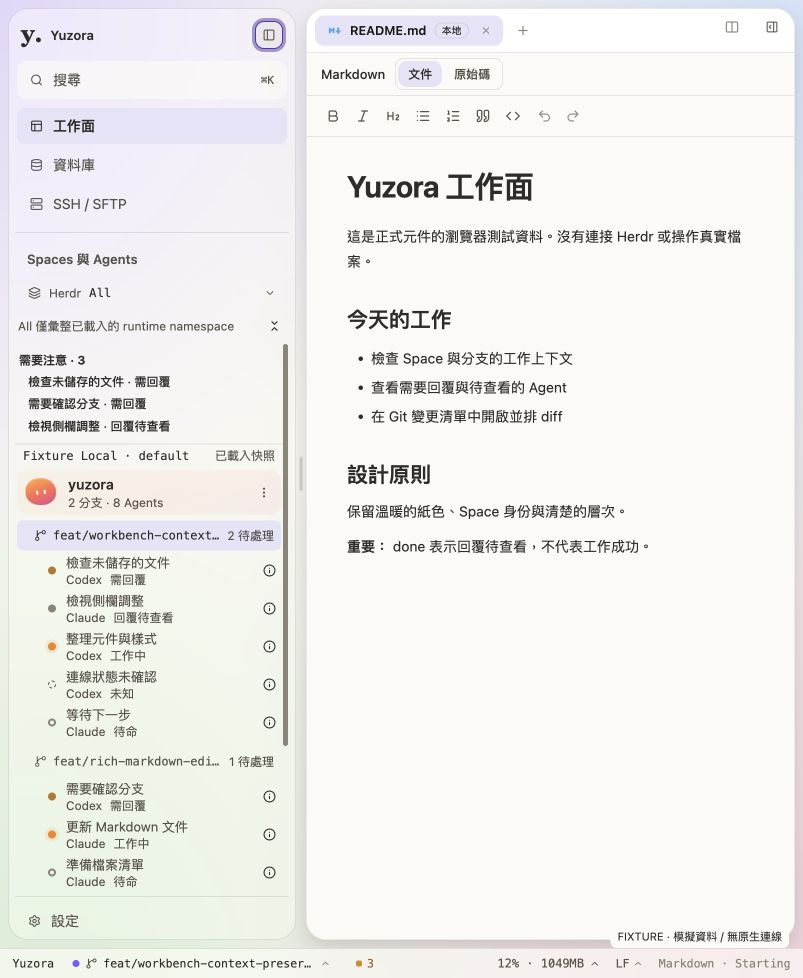
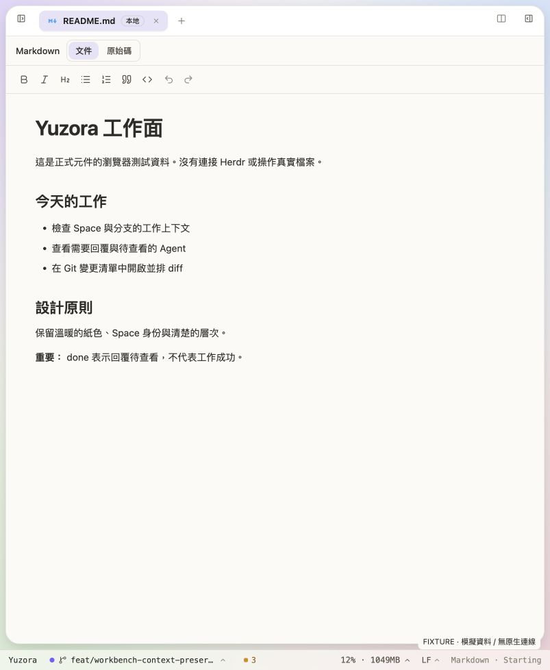

2026-09-08 · Production UI 變更紀錄收起側欄，完整讓出內容空間
Logo 上方增加 8px 留白。收合後不再保留整條空白窄側欄，左右寬度皆回到 0；展開按鈕整合在 Editor／Terminal 工作分頁列的兩端，持續可見，不依賴 hover。
沿用 shadcn Button、既有 zh-TW／en accessible names 與 Lucide。展開時按鈕視覺上回到側欄標頭。兩側按鈕各自保留同一個 DOM 節點，切換時只改變位置；位置不套動畫，鍵盤焦點不會因元件重建而遺失。分頁列預留按鈕所需空間，不覆蓋檔名或分割控制。
Git／Database 的工具列結構不同，收合時於工作區上方保留 36px 控制空間，避免壓住原有操作。macOS 收合左側時，另外保留 x22／y27 原生紅綠燈區域，第一個分頁向右讓位；Native code 與視窗控制位置未修改。
驗證結果
| 證據 | 結果與範圍 |
|---|
| 受影響測試 | AppShell、AppShell.layout、panels 共 3 個測試檔、69 項測試通過。包含收合寬度為 0、按鈕保持可達、焦點、原文件／元件保留及 Native 控制預留節點。 |
| Build／靜態檢查 | 最終 build 與兩份 TypeScript config 通過；lint 0 errors、56 warnings；git diff --check 通過。測試完成後追加按鈕位置不動畫的 CSS，已再次 build 並量測 computed style。 |
| Logo 位置 | 瀏覽器實測側欄 y8、Logo 容器 y21，前版容器為 y13，增加 8px 留白。 |
| 720×480 | 兩側實測寬度皆 0，中央可用寬度 704px；相較前版細窄側欄配置的 592px，多出 112px。Document width 為 720px，兩個按鈕皆 28px。 |
| 分割編輯器 | 真實瀏覽器以 fixture 開啟左右分割，第一組 header 左側 padding 為 48px、最後一組右側 padding 為 48px，中間邊緣仍為 8px。展開按鈕底部 y41，位於既有 44px 分頁列內；分割關閉後原 README 保留。 |
| Git／Database | 實際切換 fixture 畫面並收起側欄：Database 內容從 y44 開始，Git 工具列約 y44，展開按鈕底部 y41。兩者的入口可點擊，返回工作面及鍵盤焦點已確認。未建立真實 DB 連線、傳輸檔案或執行 Git 寫入。 |

展開：803×978、light／violet 瀏覽器 fixture。按鈕焦點外框為鍵盤操作證據。

收合：整條窄側欄已移除。模擬 Agents／Sessions 不代表真實 runtime。
交付
變更 src/app/AppShell.tsx、src/app/workbench/workbench-shell.css 與兩份受影響 tests。未調整 Editor／Terminal 引擎或後端。最新版 build 已同步至 dist，瀏覽器測試頁已更新；原生 App 重新載入前端後生效。本次未強制重載正在使用的原生 App，也未執行 Git 寫入。
原生紅綠燈實際疊放、Native Preview 輸入、完整 200% zoom 與所有 palette 的對比矩陣未在本次重新驗證，不填 PASS。驗證日誌：output/sidebar-reveal/{tests,build,lint}.log。HEAD：711342825480a2edd5eb79005554ce828177e245。